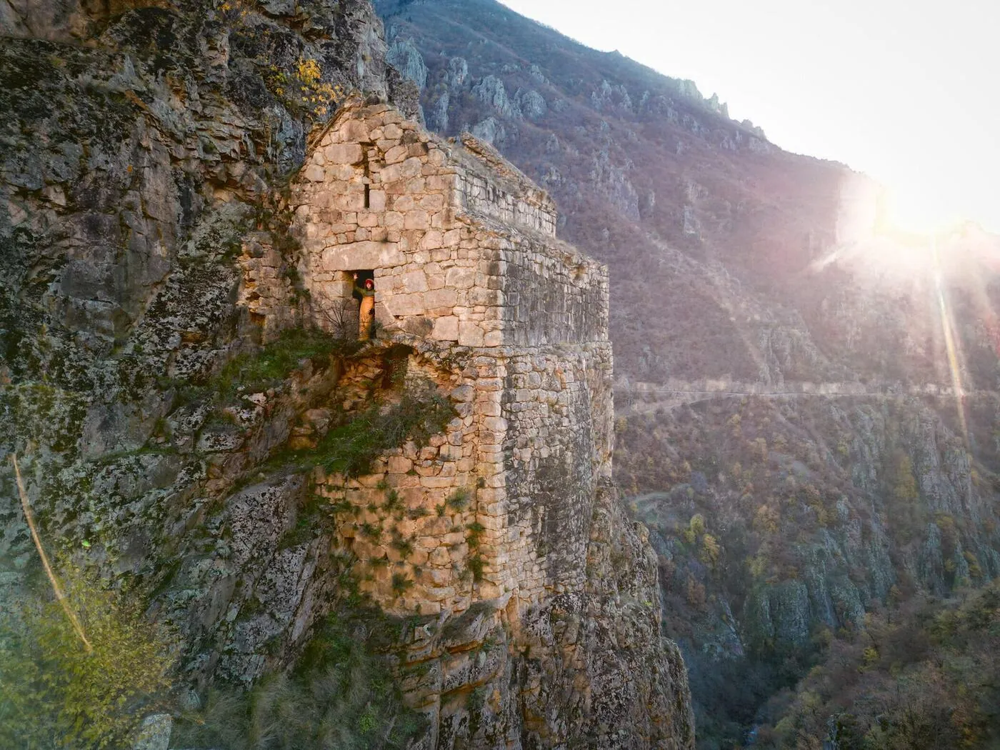
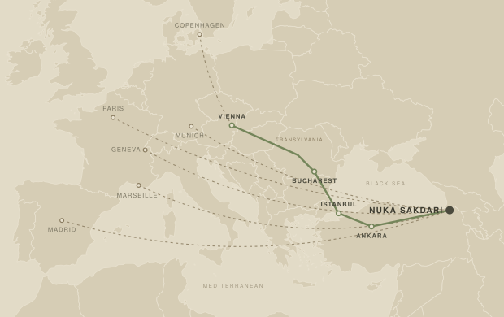
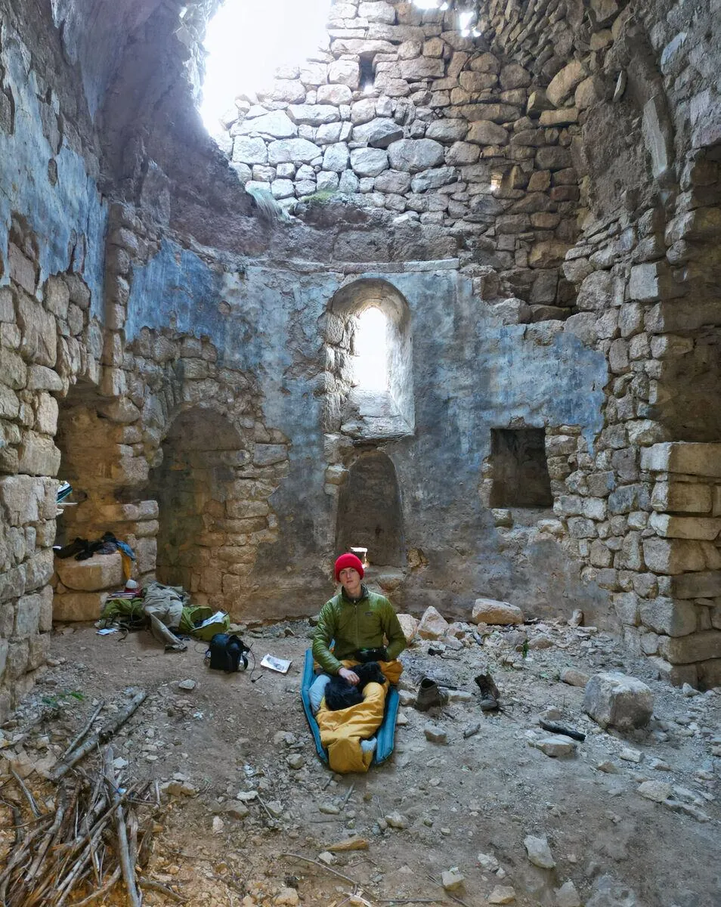
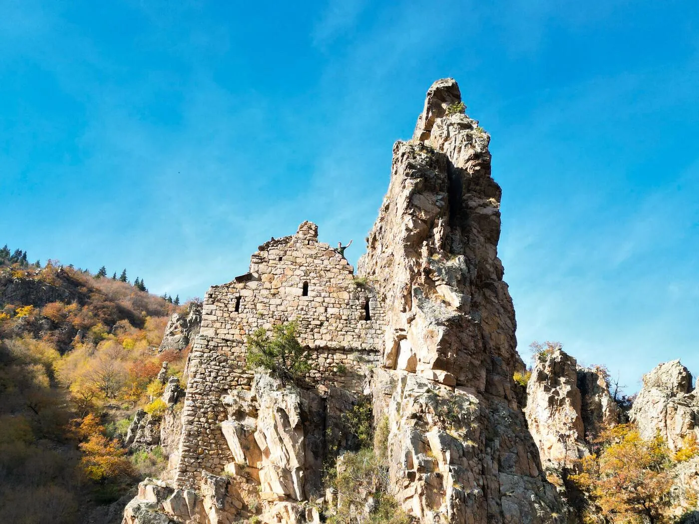

Expedition · Artvin, Turkey
Saving Nuka Sakdari
A church of the ninth century is about to collapse. A young group of architects, designers, filmmakers, artists and historians is travelling to northeastern Turkey to measure it, and to save it.
Supported by


two naves
or elevations, ever
on foot only
October 2026
It has stood for eleven hundred years. Nobody has ever drawn it. Soon it will be too late.
Nuka Sakdari is a Georgian church of the ninth century in the province of Artvin, in northeastern Turkey, the last standing part of a monastery complex. It sits on a narrow ledge in a valley wall and is inaccessible by vehicle. It has two naves separated by a round column, parts of the stone roof are open to the sky, and the walls are actively failing. It belongs to an important family of Georgian churches in the region, and it has been left to decay.
Expeditions have reached it. Nikolai Marr photographed it in 1904. But nobody has ever measured it or drawn it. No plan, no section, no elevation, no scan, in any language. And in Turkey nothing may be repaired that has not first been drawn.
That is what this expedition is for. Over fourteen days we make the first measured record the building has ever had, and we film it. The record makes a repair possible. The film raises part of the money and reaches the people who can raise the rest.
The entire record of eleven hundred years
This is not a building that is under-published. It is a building that has never been measured. There is no section, no elevation, no site plan of the complex, no Turkish rölöve and no digital record of any kind, in any language.
| Year | What exists |
|---|---|
| 1904 | Nikolai Marr's expedition reaches the site. A description and the first photographs, published 1911. |
| 1992 | Wachtang Djobadze, Early Medieval Georgian Monasteries in Historic Tao, Klarjet'i and Šavšet'i, Stuttgart. Two pages and plates. |
| 1994 | David Khoshtaria makes a hand survey. One ground plan. No sections, no elevations. |

A detailed survey, made far from any infrastructure
There is no road to the church, no electricity and no phone signal, and no chance of coming back the following week to correct a mistake. So the building is drawn the way it has always been drawn: by hand, on paper, on the ledge. Around that hand survey we build two machine records. Inside, a laser scanner takes the room as a point cloud. Outside, where the cliff leaves a scanner nowhere to stand, a drone photographs the church and the rock it sits on, and those photographs become a second point cloud. Everything is tied to coordinates measured on the ground, and the three records check each other.
What comes back down the valley is a set of plans, sections, elevations, a site plan and a georeferenced model, accurate enough to build a restoration project on.
Who makes that possible
The writing instrument manufacturer from Heidelberg. LAMY supply the pens and pencils the survey is drawn with. They also contribute to the funding and carry the project on their global channels.
A Reach RS4 base and a Reach RS3 rover, linked by radio. They put the survey into real coordinates and feed corrections to the drone in a valley with no network at all.
A Leica BLK360 for the interior, the smallest laser scanner on the market. BIMm Solutions are a Leica partner, and their software turns the scan into the orthophotos and the meshed model the conservation council needs.
Two Metashape Professional licences. This is the software that turns the drone photographs into the second point cloud and the measured three dimensional model.
Foldable 120 watt and 60 watt solar panels. With a battery station they are the whole power supply on site: the scanner, the instruments, the cameras and the laptops all run off them.
A B+W 810 ND filter for the filming. There are about ten stops of light between the wall we are drawing and the open sky above it, and the filter is how the camera holds both.
Colourlab for the colour of the film, and a Live 12 Intro licence from Ableton for its sound.
A measured survey is what makes the repair possible
The record goes to the Turkish heritage authority in Erzurum. Nothing may be repaired there that has not first been drawn, which is the practical reason nothing has ever been done here. Once it is in their hands, the aim is stabilisation from 2027 onwards, carried out by Turkish restoration architects and Turkish specialists. We do not restore. We measure, we document, we raise the money and we make the case for it.
The film
Ten to twenty minutes, shot during the expedition: the survey itself, and the work, the sleeping and the living inside the church. We use it to present the project, and we enter it into film competitions around the world, both to make the building known and to put any prize money straight back into its repair. Everyone who supports the expedition is named in the film.
Where the work goes afterwards
The work goes to the architecture press first, to titles like Domus, The Architectural Review and Detail, and to the many smaller journals that publish measured surveys and restoration work. Beyond the field it belongs in the wider press: in design magazines, in the culture pages, and in the news itself. We will be pitching it to papers such as Die Zeit, Le Monde, The Guardian and The New York Times.
The journals
We come back with the first published sections, elevations and site plan of a building that no architectural library holds in full. For journals on architecture, design and history, that is a first publication, not a reprint.
No documentary has ever been made about the churches of Tao-Klarjeti. Not one. Not yet.
A building held by a ledger
Restoration of Georgian churches in Turkey has for years been entangled in reciprocity talks between Ankara and Tbilisi, church restorations counted against mosque restorations. That ledger has failed to balance for over a decade, and while it does, nobody touches anything.
We keep the project strictly outside that frame. The money is raised in Europe by the project team, Georgian scholars participate academically and as observers, and any physical intervention is designed, approved and executed by Turkish experts under the authority of the Ministry of Culture and Tourism and its regional conservation council. We fund, we document, we advocate, we film. We do not touch the stone.
What we are asking for
The instruments and the software are covered by the companies above. Everything around them is still open, and that is where a partner makes a real difference: how many of us can come, how long we can stay on the ledge, how much of the work gets done on the mountain instead of months later, and how far the result travels once we are back. We would like to find those partners.
1 · Funding
What is still open are the running costs of getting there and working there: the overland journey, insurance for a remote site, and the film equipment, the cameras and the software the record and the film are made with. A contribution can be earmarked for a single line, and we send a line by line budget on request.
2 · Introductions
A name opens doors that money cannot. We are looking for introductions to heritage foundations and cultural programmes, to the heritage authority in Erzurum and the ministry in Ankara, to Georgian institutions and universities working on Tao-Klarjeti, to journals of architecture and conservation, and to companies that could supply what is still missing.
3 · Equipment
Still open: packs for carrying heavy loads, mats and sleeping bags for two weeks at altitude in October, a stove, cameras and lighting for the film, medical and safety equipment for a site hours from the nearest road, and drawing paper and boards that survive two weeks of weather on a ledge. Everything supplied is named in the film credits.
4 · Expertise, and coming with us
If anything on this page is close to what you do, we would like to hear from you: conservation, structural engineering, photogrammetry, archives, heritage law, drawing, photography, film, or something we have not thought of. There is room in the group for people who bring a skill to it, and the invitation to join the expedition is a real one.
An international team, assembled to make one survey possible

The team comes together from seven countries. One group drives from Vienna through Transylvania and Bucharest to Istanbul, then east across the whole of Anatolia. The instruments, the cameras and the camp kit travel by car, and the car is not a convenience: the valley is isolated and the last villages are far apart, and without a vehicle of our own nothing gets up there, nothing gets resupplied, and nobody gets out in a hurry. One of us comes down from Copenhagen and joins the caravan in Vienna. The others fly in from Madrid, Paris, Marseille, Geneva and Munich. We regroup in Artvin, drive as far as the track allows, and then walk.
Between five and ten people, from seven countries
The group is made up of architectural designers, architecture students, an architect, a filmmaker, an artist and a conservationist. On site we are joined by a Turkish fixer and a licensed survey office, which is what makes the documentation acceptable to the ministry.
- Tassilo de la Torre SchönbornExpedition lead · Architectural designer · Spain and Germany
- Lorenz BühlerFilmmaker · Architectural designer
- Ekin ÖztürkArchitectural designer · Turkey
- Nico WittArchitectural designer and artist · Spain
- Raphaëlle RousseauArchitectural designer · France
- Emma LambotArchitectural designer · France
- Imanol VilasetruArchitect · Argentina and Italy
- Emanuele LovatelliConservationist · Italy and Kenya
Further members are joining; their names are not confirmed yet.
Where the team stays
There is no accommodation within reach of the site. For two weeks the church is the camp: we sleep in it, cook in it, eat in it and work in it. There is no infrastructure anywhere near. Solar panels from PowerFilm and a battery station are what keep us working up there.
The camp is covered too
Packs and camp equipment for the group.
Waterproof transport. The instruments, the laptops and the drawings have to come back down dry.
Water filters and the camp stove, so that not every litre has to be carried up the slope.
Ruhla, from Pointtec in Munich. The watch that goes up with the survey.

In short
| The project | Saving Nuka Sakdari. The first measured record of a Georgian church of the ninth century, made so that it can be repaired. |
|---|---|
| Where | 41.2569° N, 42.0880° E. Nuk'as Saq'dari Kilisesi, Artvin province, Turkey. |
| When | On site from 7 to 20 October 2026 |
| Team | Five to ten people from seven countries, plus a fixer and a licensed survey office |
| Output | Plans, sections, elevations, site plan, georeferenced model, a short film |
| After | File to the heritage authority in Erzurum, stabilisation from 2027 |
| Asking for | Funding, introductions, equipment, expertise |

If you want to help or come along, contact us.
Money, equipment, a contact, a piece of information about this building that we do not have, or your own hands on the mountain in October. Call, write, or send a message.
Phone and WhatsApp
Expedition lead
Tassilo de la Torre Schönborn
Previous work
Long journeys under my own power, and the writing that came out of them.
- The Danube, source to sea, 2,580 km from Ulm to the Black Sea in a seventy-year-old folding kayak.
- Befahrung des Tibers, the full report of a solo descent of the Tiber, 380 km from Sansepolcro to the sea.
- More writing and all journeys.
Nuka Sakdari, Artvin province, Turkey. A proposal by a small international group. Nothing on this page is a claim on the building: any work on it belongs to the Turkish authorities.